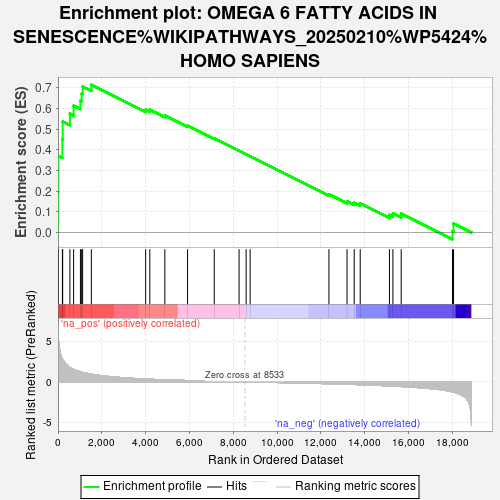

| | | Dataset | GFPPositive_GFPNegative |
| Phenotype | NoPhenotypeAvailable |
| Upregulated in class | na_pos |
| GeneSet | OMEGA 6 FATTY ACIDS IN SENESCENCE%WIKIPATHWAYS_20250210%WP5424%HOMO SAPIENS |
| Enrichment Score (ES) | 0.71514887 |
| Normalized Enrichment Score (NES) | 1.9518772 |
| Nominal p-value | 0.001908397 |
| FDR q-value | 0.03083107 |
| FWER p-Value | 0.343 |
Table: GSEA Results Summary

Fig 1: Enrichment plot: OMEGA 6 FATTY ACIDS IN SENESCENCE%WIKIPATHWAYS_20250210%WP5424%HOMO SAPIENS
Profile of the Running ES Score & Positions of GeneSet Members on the Rank Ordered List
Fig 2: OMEGA 6 FATTY ACIDS IN SENESCENCE%WIKIPATHWAYS_20250210%WP5424%HOMO SAPIENS: Random ES distribution
Gene set null distribution of ES for OMEGA 6 FATTY ACIDS IN SENESCENCE%WIKIPATHWAYS_20250210%WP5424%HOMO SAPIENS